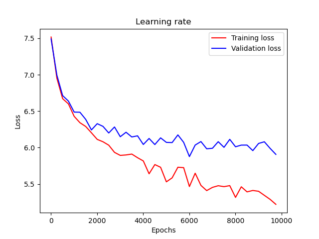

一个模仿 Twitter 账号 @realDonaldTrump 语言风格的简易 AI。
文本生成（Text Generation）是自然语言处理（Natural Language Processing, NLP）技术的一个常见的应用场景。根据文本数据集的特征，我们可以训练 AI 生成有着特定风格的文本。这里我们选择以特朗普（Donald Trump）的推特（Twitter: @realDonaldTrump）作为模仿对象，有以下四点原因：
感觉训练一个特朗普风格的 AI 会比较有意思，而且难度也不算很高。作为 NLP 初学者，目前还不是很熟悉深度学习（Deep Learning），加上期末季时间实在过于有限，最后就选择了这个题目。
尽管特朗普的推特账号在 2021/01/08 被永久封禁，幸运的是，我们还是能在网上找到特朗普被封禁前的推特存档。
在这里，我们可以根据年份和关键词检索、浏览及下载特朗普发过的所有推特。可以看到总共有将近 60000 条推特数据，还是相当可观的。
使用该网站提供的导出功能，我们可以得到 JSON 格式的推特数据，保存在了 data/raw_json/ 文件夹下。这里我们仅下载了 2018 ~ 2021 年的推特数据，并预先过滤了以下数据：
http:// 或 https:// 开头的推特，这些通常是链接分享，并不包含文本信息RT 开头的推特，这些通常是转发（retweet）的推特，不是特朗普本人的发言接下来，我们需要将这些 JSON 格式的数据进一步处理，从而得到一个可以进行训练的语料库。在 corpus.py 中，我们定义了两个类 dictionary 和 corpus。其中，dictionary 用于维护一个词典，保存了数据集中出现过的所有单词，以及相应的索引和出现频率；corpus 用于维护一个语料库，以 List[str] 类型按顺序保存了完整的数据集，并提供了将 JSON 格式数据转化为 text 格式数据的处理方法，以及 text 格式数据的读取方法。
具体来说，首先 corpus 利用函数 get_text_data，读取 JSON 格式的数据，遍历并提取所有推特对象的 text 字段（也就是推特的文本内容）。然后我们利用 spaCy 库，将每条文本进行分词处理，包括将各种标点符号与单词分开，以及将 n't, 's 等常用缩写从单词上分离。最后将处理后的数据以 text 格式保存在 data/text/ 文件夹下。
得到 text 格式数据以后，corpus 利用函数 read_data 将数据载入内存。一方面，将每行文本分成一组单词，并添加句首标记 <sos>（start of sentence）和句尾标记 <eos>（end of sentence），利用函数 add_sentence 以 List[str] 类型保存在数据集中；另一方面，在添加句子的同时，将句子中出现的单词不重复地保存到词典 dictionary 中，并记录此时的索引，用于之后将句子转化为张量（tensor）。
在进行训练时，我们将每个单词替换为它在词典中的索引，这样一个句子就可以表示为一个张量了。对于测试集中出现的不在词典里的未知单词，将会被标记为 <unk>（unknown），并在转化为张量时随机指派一个索引。
完整代码可参见 corpus.py，其中主要代码如下：
# trump_bot/corpus.py class dictionary(): ''' A dictionary which contains all words in the training set. ''' def __init__(self) -> None: ''' Initialize the dictionary. ''' self.idx2word: List[str] = [] self.idx2freq: List[int] = [] self.word2idx: Dict[str, int] = {} self.freq_threshold = 1 self.start_pos = 3 self.unk = '<unk>' # unknown word self.eos = '<eos>' # end of sentence self.sos = '<sos>' # start of sentence self.add_word(self.unk) self.add_word(self.eos) self.add_word(self.sos) def len(self) -> int: ''' Return the current size of the dictionary. ''' return len(self.idx2word) def add_word(self, word: str) -> int: ''' Add a new word to the dictionary. Return the index of the word. :param word: new word ''' if word not in self.idx2word: idx = self.word2idx[word] = self.len() self.idx2word.append(word) self.idx2freq.append(1) else: idx = self.word2idx[word] self.idx2freq[idx] += 1 return idx def clear_words(self) -> None: ''' Remove infrequent words that appears at most `freq_threshold`. ''' i: int = self.start_pos while i < len(self.idx2word): if self.idx2freq[i] and self.idx2freq[i] <= self.freq_threshold: removed_word: str = self.idx2word[i] self.word2idx.pop(removed_word) last_word: str = self.idx2word.pop() if i >= len(self.idx2word): self.idx2freq.pop() break # Swap the removed word with the last word in dictionary self.idx2word[i] = last_word self.idx2freq[i] = self.idx2freq.pop() self.word2idx[last_word] = i else: i += 1
# trump_bot/corpus.py class corpus(): ''' A corpus built with the training set. ''' def __init__(self) -> None: ''' Initialize the corpus. ''' self.json_dir: str = os.path.realpath('data/raw_json') self.text_dir: str = os.path.realpath('data/text') self.data_file = 'data.txt' self.train_set: List[str] = [] self.train_proportion = 0.4 self.dev_set: List[str] = [] self.dev_proportion = 0.4 self.test_set: List[str] = [] self.test_proportion = 0.2 self.dictionary = dictionary() def get_text_data(self, file_name: str, all_in_one: bool = False) -> None: ''' Parse a dataset from JSON to plain text. :param file_name: file name of the dataset without extension :param all_in_one: write to a single file ''' def _filter_text(text: str) -> str: ''' Filter a line of text and replace certain words. Return the filtered text. :param text: input text ''' return ( text .replace('&', '&') .replace('&,', '&') ) json_path: str = os.path.join(self.json_dir, file_name + '.json') try: with open(json_path, 'r', encoding='utf-8') as fi: data: List[dict] = json.load(fi) except FileNotFoundError: data: List[dict] = [] text_name: str = self.data_file if all_in_one else file_name + '.txt' text_path: str = os.path.join(self.text_dir, text_name) buffer_size = 1 << 20 # 1 MB tokenizer = get_tokenizer('spacy') with open(text_path, 'a' if all_in_one else 'w', buffering=buffer_size) as fo: buffer: str = '' # Reverse the list to sort by time in ascending order for entry in reversed(data): t: tweet = decode_tweet(entry) text: str = _filter_text(unidecode(t.text)) words: List[str] = tokenizer(text) buffer += ' '.join(words) + '\n' fo.write(buffer) def get_all_text_data(self, all_in_one: bool = False) -> None: ''' Parse all datasets in `json_dir` from JSON to plain text. :param all_in_one: write to a single file ''' if all_in_one: # Clear the content text_path: str = os.path.join(self.text_dir, self.data_file) open(text_path, 'w').close() for json_entry in os.scandir(self.json_dir): file_name: str = json_entry.name if file_name.endswith('.json'): self.get_text_data(file_name[:-len('.json')], all_in_one) def add_sentence(self, words: List[str], dataset: str = 'train') -> None: ''' Add a new sentence to the corpus. :param words: a preprocessed word list of the new sentence :param dataset: which dataset, can be `'train'`, `'dev'` or `'test'` ''' if not words: return try: if words[0].startswith('...'): words.pop(0) else: words.insert(0, self.dictionary.sos) if words[-1].endswith('...'): words.pop(-1) else: words.append(self.dictionary.eos) except IndexError: pass else: for word in words: self.dictionary.add_word(word) if dataset == 'dev': self.dev_set += words elif dataset == 'test': self.test_set += words else: self.train_set += words def read_data(self, file_name: str = None) -> None: ''' Read a dataset from a file, and append to the corpus. :param file_name: file name of the dataset without extension ''' text_name: str = file_name + '.txt' if file_name else self.data_file text_path: str = os.path.join(self.text_dir, text_name) with open(text_path, 'r') as fi: all_lines: List[str] = fi.read().splitlines() train_size: int = floor(len(all_lines) * self.train_proportion) dev_size: int = floor(len(all_lines) * self.dev_proportion) for line in all_lines[:train_size]: self.add_sentence(line.split(), 'train') for line in all_lines[train_size:train_size+dev_size]: self.add_sentence(line.split(), 'dev') for line in all_lines[train_size+dev_size:]: self.add_sentence(line.split(), 'test') # self.dictionary.clear_words()
这里我们主要采用 GRU（Gate Recurrent Unit）模型进行训练，它是循环神经网络（Recurrent Neural Network, RNN）的一种。
为什么采用 GRU？首先是因为纯 RNN 存在梯度消失（Gradient Vanishing）的问题。也就是说，随着训练的深入，当 RNN 处理后期的数据时，前期的数据由于在训练过程中会不断乘一些小于 1 的数，导致后期梯度消失（归零），不再参与学习，这些前期数据就相当于是被「遗忘」了。这样的结果是 RNN 只具备短期记忆，而对于文本生成这样的任务来说，这将导致 RNN 很难有上下文的概念，因此生成的文本可能从开始到结束就换了好几个主题。而 LSTM（Long Short-Term Memory）和 GRU 则解决了这个问题。那为什么不采用 LSTM 呢？这是因为 GRU 相较于 LSTM 训练速度更快，同等情况下需要的训练时间更短，而且代码实现也相对简洁（因为模型简单）。由于期末季时间较少，这里我们就选择了 GRU 模型。
更具体地，对于每一个神经元：
模型利用 PyTorch 框架建立，完整代码可参见 model.py，其中主要代码如下：
# trump_bot/model.py class rnn(nn.Module): ''' Build an RNN model. This model will take the last character as input and is expected to output the next character. There are three layers - one linear layer that encodes the input character into an internal state, one GRU layer (which may itself have multiple layers) that operates on that internal state and a hidden state, and a decoder layer that outputs the probability distribution. ''' def __init__(self, input_size: int, hidden_size: int, output_size: int, num_layers: int = 1, dropout: float = 0.2) -> None: ''' Initialize the RNN model. :param input_size: the number of expected features in the input :param hidden_size: the number of features in the hidden state :param output_size: the number of expected features in the output :param num_layers: the number of recurrent layers ''' super().__init__() self.input_size = input_size self.hidden_size = hidden_size self.output_size = output_size self.num_layers = num_layers self.drop = nn.Dropout(dropout) self.encoder = nn.Embedding(input_size, hidden_size) self.gru = nn.GRU(hidden_size, hidden_size, num_layers, dropout=dropout) self.decoder = nn.Linear(hidden_size, output_size) def forward(self, inp: Tensor, hid: Tensor) -> Tuple[Tensor, Tensor]: ''' The forward function which defines the network structure. Return the result of output tensor and hidden tensor. :param inp: input tensor :param hid: hidden tensor ''' emb = self.encoder(inp.view(1, -1)) emb = self.drop(emb) out, hid = self.gru(emb, hid) out = self.drop(out) dec = self.decoder(out).view(1, -1) return dec, hid def init_hidden(self, batch_size: int = 1) -> Tensor: ''' Initialize the hidden state. :param batch_size: batch size ''' weight = next(self.parameters()) return weight.new_zeros(self.num_layers, batch_size, self.hidden_size)
整体的训练思路是，每次从训练集中随机抽取一个固定长度的片段 $\text {words}$，不妨设总共有 $n$ 个词，将 $\text {words}$ 中前 $n - 1$ 个词作为输入 $\text {inputs}$，后 $n - 1$ 个词作为目标 $\text {targets}$。遍历 $\text {inputs}$，模型根据每个输入词 $\text {inputs}[i]$ 和当前的 hidden state 预测一个输出词 $\text {outputs}[i]$ 作为 $\text {inputs}[i]$ 可能的后继词。然后将输出词 $\text {outputs}[i]$ 和目标词 $\text {targets}[i]$ 进行比对，使用交叉熵（cross entropy）计算损失（loss）函数，并利用梯度下降法尝试降低损失。这里我们使用 Adam 算法进行梯度下降，它可以自适应地调节学习率（Learning rate）。
具体代码可参见 main.py 的 train_model 函数，其中主要代码如下：
# trump_bot/main.py def train_model() -> Tuple[List[float], List[float]]: ''' The main training function. Return all training losses and all validation losses. ''' all_train_losses: List[float] = [] all_valid_losses: List[float] = [] total_train_loss: float = 0.0 total_valid_loss: float = 0.0 min_valid_loss: float = 4.0 for epoch in range(1, num_epochs + 1): train_loss: float = train(*get_random_pair('train')) valid_loss: float = validate(*get_random_pair('dev')) total_train_loss += train_loss total_valid_loss += valid_loss if valid_loss < min_valid_loss: save_model(valid_loss) min_valid_loss = valid_loss if epoch % print_every == 0: progress: float = epoch / num_epochs * 100 print( '{}: ({} {:.1f}%) train_loss: {:.3f}, valid_loss: {:.3f}' .format( duration_since(start_time), epoch, progress, train_loss, valid_loss, ) ) evaluate_model() if epoch % plot_every == 0: all_train_losses.append(total_train_loss / plot_every) all_valid_losses.append(total_valid_loss / plot_every) total_train_loss = 0.0 total_valid_loss = 0.0 return all_train_losses, all_valid_losses
# trump_bot/main.py def get_random_pair(dataset: str = 'train') -> Tuple[Tensor, Tensor]: ''' Return a random pair of input and target from the dataset. :param dataset: which dataset, can be `'train'`, `'dev'` or `'test'` ''' if dataset == 'dev': src = cp.dev_set elif dataset == 'test': src = cp.test_set else: src = cp.train_set max_i: int = len(src) - chunk_size i: int = torch.randint(0, max_i, (1,))[0] inp_words: List[str] = src[i:i+chunk_size] inp: Tensor = words_to_tensor(inp_words) tar_words: List[str] = src[i+1:i+1+chunk_size] tar: Tensor = words_to_tensor(tar_words) return inp, tar
# trump_bot/main.py def train(inp: Tensor, tar: Tensor) -> float: ''' Train the model using a pair of input and target. Return the loss. :param inp: input tensor :param tar: target tensor ''' m.train() m.zero_grad() hid: Tensor = m.init_hidden() loss: Tensor = 0 for i in range(inp.size(0)): out, hid = m(inp[i], hid) loss += criterion(out, tar[i].view(-1)) loss.backward() nn.utils.clip_grad_norm_(m.parameters(), clip) optimizer.step() return loss.item() / chunk_size
# trump_bot/main.py def validate(inp: Tensor, tar: Tensor) -> float: ''' Validate the model using a pair of input and target. Return the loss. :param inp: input tensor :param tar: target tensor ''' m.eval() hid: Tensor = m.init_hidden() loss: Tensor = 0 with torch.no_grad(): for i in range(inp.size(0)): out, hid = m(inp[i], hid) loss += criterion(out, tar[i].view(-1)) return loss.item() / chunk_size
生成文本的方式是，先从测试集中随机选取若干个（参数可调节）连续单词，然后以这几个单词为开头，利用模型一个一个预测接下来的单词，从而组成一个句子。
具体代码可参见 main.py 的 generate 函数，其中主要代码如下：
# trump_bot/main.py def generate() -> None: ''' Generate new sentences using the best model, and save to local file. ''' load_model() for i in range(1, batch_size + 1): progress: float = i / batch_size * 100 print(f'({i} {progress:.1f}%)', end='\r', flush=True) evaluate_model(save=True)
# trump_bot/main.py def evaluate_model(save: bool = False) -> None: ''' The main evaluating function. :param save: save the output to local file ''' m.eval() prime_words: List[str] = get_random_words(prime_len, 'dev') predicted_words: List[str] = evaluate( prime_words, predict_len, temperature, ) output: List[str] = ' '.join(predicted_words) if save: current_time: str = datetime.now().strftime('%Y-%m-%d %H:%M:%S') with open(output_path, 'a') as f: f.write(f'{current_time}:\n{output}\n\n') else: print(output)
# trump_bot/main.py def get_random_words(count: int = 1, dataset: str = 'dev') -> List[str]: ''' Return a sequence of random words from the dataset. :param count: how many words are required :param dataset: which dataset, can be `'train'`, `'dev'` or `'test'` ''' if dataset == 'dev': src = cp.dev_set elif dataset == 'test': src = cp.test_set else: src = cp.train_set max_i: int = len(src) - count i: int = torch.randint(0, max_i, (1,))[0] words: List[str] = src[i:i+count] return words
# trump_bot/main.py def evaluate(prime_words: List[str] = None, predict_len: int = 30, temperature: float = 0.8) -> List[str]: ''' Evaluate the network by generating a sentence using a priming word. To evaluate the network we feed one word at a time, use the outputs of the network as a probability distribution for the next word, and repeat. To start generation we pass some priming words to start setting up the hidden state, from which we then generate one word at a time. Return the predicted words. :param prime_words: priming words to start :param predict_len: expected length of words to predict :param temperature: randomness of predictions; higher value results in more diversity ''' hid: Tensor = m.init_hidden() if not prime_words: prime_words = [cp.dictionary.sos] with torch.no_grad(): prime_inp: Tensor = words_to_tensor(prime_words) predicted_words: List[str] = prime_words for p in range(len(prime_words) - 1): _, hid = m(prime_inp[p], hid) inp: Tensor = prime_inp[-1] for p in range(predict_len): out, hid = m(inp, hid) # Sample from the network as a multinomial distribution out_dist: Tensor = out.view(-1).div(temperature).exp() top_i: int = torch.multinomial(out_dist, 1)[0] # Add predicted word to words and use as next input predicted_word: str = cp.dictionary.idx2word[top_i] predicted_words.append(predicted_word) # if (predicted_word == cp.dictionary.eos): # break inp.fill_(top_i) return predicted_words
配置环境前，首先需要安装以下依赖：
然后创建并启动 conda 虚拟环境，同时安装所有依赖包：
conda env update --name trump_bot --file environment.yml conda activate trump_bot python -m spacy download en_core_web_sm
最后执行主程序，就可以开始训练了。
python ./trump_bot/main.py
目前暂时不支持传递参数，因此需要手动在 main.py 里调整。
使用测试集生成的文本位于 output/output.txt，模型学习率的曲线图位于 assets/loss.png。
训练过程中的训练损失和验证损失如图所示（使用 main.py 中定义的默认参数）：

一些生成文本展示：
# 2021-01-18 23:50:37
I did a big book to be great President: Emergency (Fake.
# 2021-01-18 23:50:38
The Democrats have been done to all of the President. Great Complete!
Enjoy of Border: New House States in a GREAT!
China Virus, and all, including almost 2020, and have been the Impeachment Hoax!
# 2021-01-19 00:57:52
this is a fraud on the World of the Fake News Media for me, on the Border (and keep was the Fake News Media, would keep win to the Republican side, and over the negative of the State of the National Left
do n't believe the Trump Report
There all over the President of the Federal Government so I know, the Democrats are doing a great job to do.
Our lowest success of the United States and that will be doing quickly on the Mueller Report, that is doing a good job you need, the USA will be doing a great job!
The GREAT Media is working more to U.S., or any of the highly Left can never let a short of our Country.
# 2021-01-19 00:57:53
There is no crime of our Country. They are doing the Do Nothing Democrats, and that, the Democrats, are doing a great job, and even the Democrats, or to the Democrats!
Sleepy n't want to report the Trump Administration
The Fake News Media is not better, but the Trump News, and it is a great job!
The Democrats are great with the Democrats that the Democrats are with the Republican Party.
# 2021-01-19 00:57:54
Biggest part of the National Administration is being built with the same side to use the Fake News Media, are doing more than ever before!
I will be watching from the Great State of the Russia Virus, has in the White House to the Republican side of the United States now.
# 2021-01-19 00:57:55
Democrat run cities and states are doing their job with respect that I am pleased to announce the Democrats in the Republican Party.
Chinese are very adept at to the White House!
I have n't think the Federal Party are doing such being important in their stone to do of the President and the State of the DNC in the history of the United States, China and keep more than he. Great!
经检验，这些并不是特朗普的原话，也就是说确实是 AI 自己生成的文本。
目前从生成的文本来看，效果还算可以。整个训练过程还是比较有趣的，中间生成了许多十分有特朗普风格的搞笑句子。前期训练一直在用自己笔记本的 1050 Ti 跑，显存完全不够，跑一轮的速度也非常慢。后来看时间来不及了，实在受不了还是去租了台 GPU 服务器。后来就一直用的 Tesla V100 跑，舒服多了。
不过调参的过程真就炼丹，其实到最后也没能调出一个非常好看的学习曲线（Learning curve），毕竟对深度学习还是没什么经验。期末季也实在抽不出时间，从刚开始 RNN、PyTorch 之类的什么都不会到几天内能做出一个成品，已经不容易了。从 12 月中旬一直持续每天工作 12 小时左右直到 1 月下旬就没歇过，遭不住。
本项目遵循 GNU General Public License v3.0 许可协议，详情参见 LICENSE 文件。